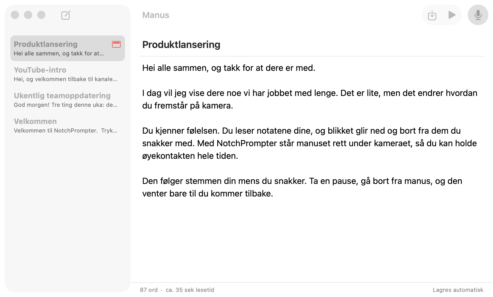
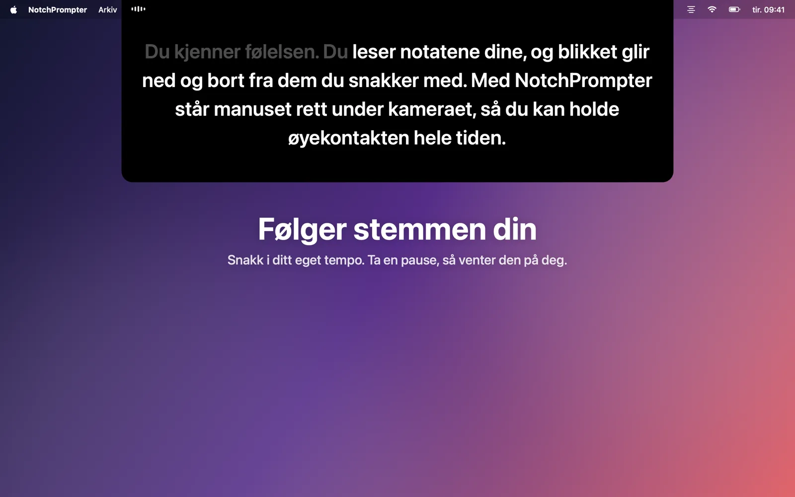
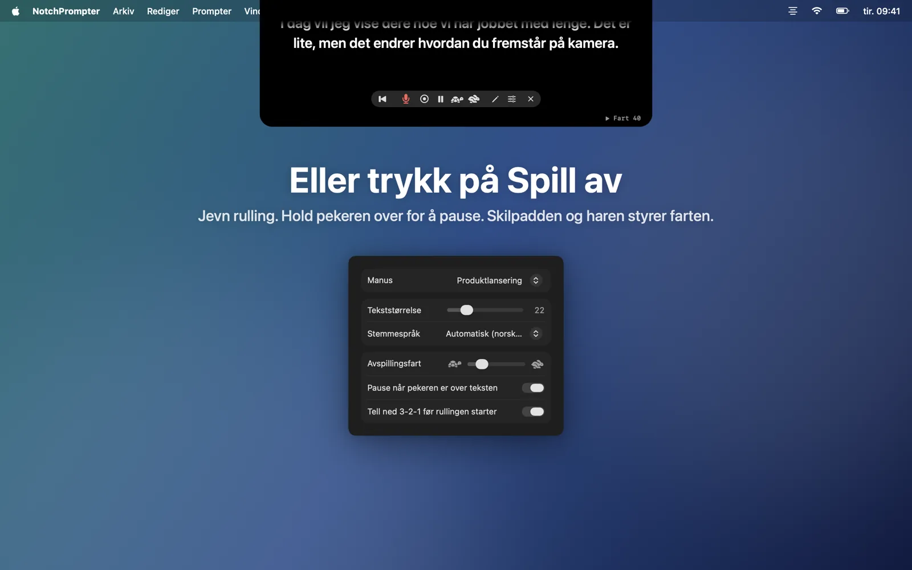
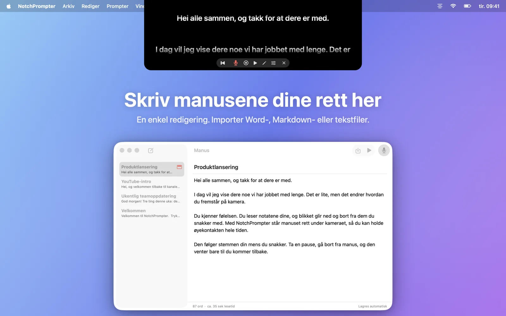
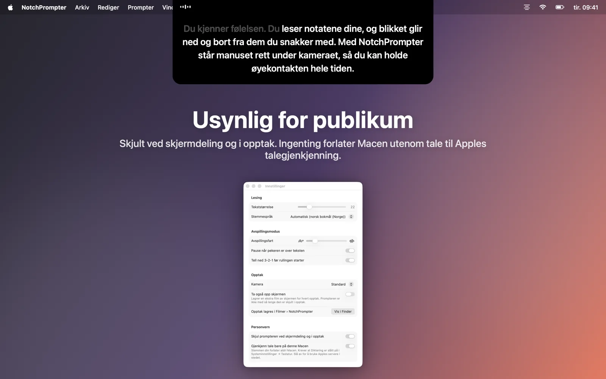

Hold øyekontakten mens du leser
NotchPrompter henger manuset rett under kameraet og følger stemmen din. På alle språk, også når du hopper fremover, og helt lokalt på Macen.
Gratis og åpen kildekode. For macOS 15 Sequoia eller nyere. Fungerer best på en MacBook med notch, og på alle Mac-maskiner med kameraet over skjermen.
Se den i bruk
Les, ta en pause, hopp fremover. Prompteren henger med.
Alt du trenger. Ingenting i veien.
Et lite, svart panel under kameraet, noen få tydelige knapper, et enkelt redigeringsvindu for manusene dine og en opptaksknapp.
Følger stemmen din
Trykk på mikrofonen og snakk. De neste ordene står alltid rett under kameraet. Ordene du har sagt, tones ut.
Alle språk, automatisk
NotchPrompter ser hvilket språk manuset er skrevet på, og lytter etter det. Engelsk, norsk, tysk, spansk, japansk og dusinvis av andre.
Henger med når du hopper over
Hopp over en setning, bytt ut et ord, si «eh». Den finner ut hvor du er, og hopper frem sammen med deg. Ta en pause, så venter den.
Eller trykk på Spill av
Jevn rulling med nedtelling 3-2-1. Hold pekeren over for å pause, og bruk skilpadden og haren til å stille inn farten.
Innebygd redigering
Skriv og samle alle manusene dine på ett sted. Importer Word-, Markdown-, RTF- eller tekstfiler. Lagres automatisk.
Ta opp deg selv
Trykk på opptak for å filme deg selv med kameraet og mikrofonen mens du leser. Hvert opptak lagres som en film i Filmer-mappen.
Usynlig for publikum
Skjult ved skjermdeling, i skjermbilder og i opptak. Bare du ser den.
Kjører helt lokalt på Macen
Talen gjenkjennes på Macen, ikke i skyen. Ingen konto, ingen sporing. Manusene og opptakene dine forlater aldri Macen.
Manusene dine, ett klikk unna
Klikk på blyanten i prompteren for å åpne redigeringsvinduet. Velg et manus, trykk på mikrofonen og begynn å snakke.
- Skriv eller lim inn manuset, eller importer en fil.
- Trykk på Les med stemmen.
- Se inn i kameraet og snakk.

Laget for kameraet
Videosamtaler, YouTube, kurs, webinarer og pitcher.




Spørsmål
Er det virkelig gratis?
Ja. NotchPrompter er gratis og har åpen kildekode under MIT-lisensen. Ingen reklame, ikke noe abonnement, ingen konto. Kildekoden ligger på GitHub, der du kan melde feil, foreslå funksjoner eller være med og utvikle den.
Fungerer den uten notch?
Ja. På en Mac uten notch henger prompteren fra toppen av skjermen, under menylinjen, som fortsatt er nær kameraet.
Hvilke språk støtter stemmestyringen?
Dusinvis, blant annet engelsk, norsk, tysk, fransk, spansk, kinesisk og japansk. NotchPrompter ser hvilket språk manuset er skrevet på, og lytter etter det språket, så du trenger ikke å stille inn noe. Du kan velge et annet språk i Innstillinger.
Ser andre prompteren når jeg deler skjermen?
Nei. Som standard er den skjult ved skjermdeling, i skjermbilder og i opptak. Du kan slå dette av i Innstillinger hvis du vil vise den.
Sendes noe til skyen?
Nei. Talen gjenkjennes på Macen (med Diktering slått på i Systeminnstillinger), og NotchPrompter har ingen servere. Stemmestyringen lagrer aldri lyd. Bare når du trykker på opptak, lagres en film, i din egen Filmer-mappe. Les personvernerklæringen.
Hvilke hurtigtaster finnes?
Klikk på prompteren, og så: Mellomrom spill av/pause, V stemme, C opptak, R tilbake til start, ↑ ↓ fart, + − tekststørrelse, E redigering, Esc stopp.